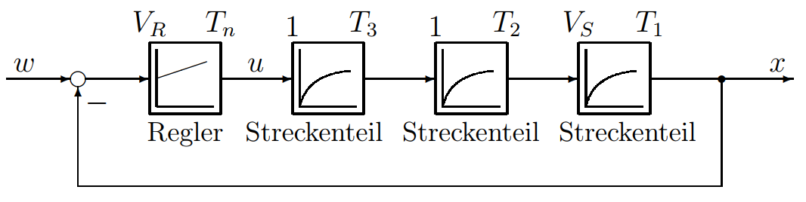
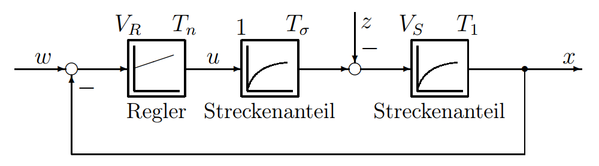

无标题
3 标准优化方法
3.1 幅值最优 (BO)
幅值最优 [37] 源于如下要求：闭环系统频率响应的幅值应在尽可能宽的频率范围内保持理想，即被控量应尽量精确地跟踪给定值直到尽可能高的频率。由此得出要求：将闭环幅频响应的幅值在尽可能宽的频率范围内保持为 1，相频响应保持为 0（最小相位系统）。这保证了阶跃给定下的较小超调和快速扰动抑制。
幅值最优可应用于非振荡型对象，在电力传动中例如用于电流控制回路，当变流器环节的动态特性不可忽略时。部分情况下也用于转速控制回路，当转速控制器不含积分环节时。
下面先通过一个例子进行直观推导，然后给出各种应用场景的提示，最后为感兴趣的读者提供数学推导。
3.1.1 无积分环节对象的推导
一般无积分环节对象
图 3.1 所示为一个不含积分环节的通用控制回路。对象由三个一阶惯性环节串联组成。

对象传递函数为：
此类控制回路通常具有大小不同的时间常数。若满足
（通常相差 5 倍即可），则可将小时间常数合并为总小时间常数 $ T_\sigma $：
而不致明显影响控制回路在动态主要频段内的性能。实际系统中这些小时间常数可来自变流器延迟、下级控制回路的等效时间常数或测量滤波等。
幅值最优推导用控制回路
为推导幅值最优，采用一个由两个一阶惯性环节（一个大时间常数 $ T1 $ 和一个总小时间常数 $ T\sigma $）组成的 PT2 对象，并配以 PI 控制器，如图 3.2 所示。按幅值最优优化控制器参数可通过简单的物理思考来理解。

PT2 对象：
PI 控制器：
对象的大时间常数 $ T1 $ 例如在电流控制回路中对应电枢时间常数 $ T_A $，小时间常数 $ T\sigma $ 对应变流器和测量滤波的延迟。
若同时关注控制回路的抗扰性能，则大时间常数 $ T1 $ 应小于或等于小时间常数 $ T\sigma $ 的四倍，即
这是由抗扰性能决定的，将在 3.2.2 节中详述。若 $ T1 > 4T\sigma $，则对无积分环节对象采用对称最优（见 3.2.2）。不过，在电流控制回路中，幅值最优的适用区间通常受此条件限制。若只关注给定跟踪性能，则上述条件可放宽。
采用 PI 控制器有两个优点：可补偿对象的最大时间常数，这是获得最佳动态性能的前提；同时控制器积分环节保证稳态无静差。
由此得到第一个优化条件：为补偿对象的最大时间常数 $ T_1 $，将 PI 控制器的积分时间 $ T_n $ 设为该时间常数，即 $ T_n = T_1 $。在此条件下，开环传递函数 $ G_0(s) $ 和闭环传递函数 $ G_w(s) $ 为：
幅值最优要求 $ |F_w(j\omega)| $ 在尽可能宽的频段内保持为 1，这引出第二个优化条件。考察 $ F_w(j\omega) $ 的频率响应（令 $ s = \sigma + j\omega \to j\omega $）：
其幅值平方为：
为使 $ |F_w(j\omega)| $ 在较宽频段（从低频开始）接近 1，必须消去 $ \omega^2 $ 项，因为该项比 $ \omega^4 $ 项在低频时衰减更慢。因此要求：
于是得到两个一阶惯性环节对象下的幅值最优准则：
幅值最优 (BO)
用 PI 控制器的超前环节补偿对象较大的时间常数 $ T_1 $：
调整 PI 控制器的增益，使闭环幅频响应在尽可能宽的频段内接近 1：
若考虑抗扰性能，则附加条件：
将控制器参数代入后，得到幅值最优化的标准二阶闭环传递函数：
该传递函数具有共轭复极点，因此是振荡性的。其阻尼比 $ D = 1/\sqrt{2} $，最大超调约 4%，上升时间 $ t{an} = 4.7 T\sigma $，调节时间（±2% 误差带）$ t{aus} = 8.4 T\sigma $（见图 3.22）。
由于该传递函数在频域和数学处理上较为复杂（见图 1.15），通常用一阶惯性环节（等效时间常数 $ T_{ers} $）来近似幅值最优的闭环：
图 3.3 给出了开环、给定及扰动频率响应。第 81 页的表格汇总了常见对象类型的整定规则。
3.1.2 幅值最优的推广与应用
控制器增益对闭环阻尼的影响
以上结果可作一般化处理。引入回路积分时间 $ T_0 = T_1/(V_R V_S) $，则二阶闭环传递函数可写为：
其中 $ T_0 $ 通过控制器增益自由设定。固有频率 $ \omega_0 $ 和阻尼比 $ D $ 分别为：
幅值最优的阻尼比由第二个优化条件 $ T0 = 2T\sigma $ 得到 $ D = 1/\sqrt{2} = 0.707 $。若 $ T0 \ge 4T\sigma $，则系统呈非周期性（$ D \ge 1 $）。两种情况下上升时间约为 $ t_{an} \approx 2.5 T_0 $。
图 3.4 给出了在不同 $ T_0 $ 下，给定和扰动阶跃响应（对应图 3.2 的信号流图）。从给定响应可看出控制器参数选取时稳定性与动态性能之间的折中。
补偿另一个时间常数的幅值最优
若除了大时间常数 $ T1 $ 外，还可补偿其他时间常数中的最大者，则可采用 PID 控制器。相比 PI 控制器，这能提高动态性能，因为剩余的小时间常数 $ T\sigma $ 变小了。但需注意，尤其是微分环节可能引起信号过冲，且测量值噪声不应过大。
PID 控制器的积分时间 $ T_n $ 补偿大时间常数 $ T_1 $，微分时间 $ T_v $ 对应第二个时间常数 $ T_2 $。因此整定规则为：
（参见第 81 页表格，第 6 项）。
反馈通道含测量延迟时的幅值最优
实际中常见情况是通过延迟测量环节获取实际值。从控制角度看，该环节位于反馈通道。以二阶对象加 PT1 测量滤波（时间常数 $ T_g $）为例进行讨论（图 3.5）。
按幅值最优优化时可针对 $ x’ $ 进行，即把反馈环节视为对象的一部分。只要仅关注开环的输入‑输出特性且对象线性，即可将两个 PT1 小时间常数 $ T2 $ 和 $ T_g $ 合并为 $ T\sigma $（参见 1.4 节）。
令 $ T_\sigma = T_2 + T_g $，得：
因此 PI 控制器按幅值最优整定为：
由反馈关系 $ x’ = x \cdot V_r/(1 + sT_g) $，可得到实际被控量的闭环传递函数：
为求得实际被控量 $ x/w’ $ 的传递函数，需通过测量滤波反推：
其中 $ V_r $ 确定稳态终值（$ s \to 0 $ 时 $ x = w’/V_r $）。该传递函数的等效时间常数可通过多项式除法（分母除分子）得到，$ s $ 的一次项系数即为等效时间常数：
这里等效时间常数仅为 $ T{ers} = 2T\sigma - T_g $，比（3.12）式小。这意味着实际被控量 $ x $ 比优化时使用的反馈量 $ x’ $ 响应更快，因此超调更大，阻尼看似降低，这是由闭环传递函数中的零点引起的。
为获得期望的幅值最优给定响应，需在给定通道中加入前置滤波 $ GG(s) $，其时间常数 $ T_G = T_g $，同时补偿 $ V{ers} $ 取 $ V_G = V_r $。
幅值最优在频域中的表示（相位裕度）
幅值最优的结论可转换到频域（频率特性）。将整定的控制器参数代入开环传递函数，在幅值穿越频率 $ \omega_d $（$ |F_0(j\omega_d)| = 1 $）处，相位角为：
若采用渐近线近似，则 $ \varphi0^* = -116.5^\circ $，对应相位裕度 $ \varphi{Rd} = 180^\circ + \varphi_0^* = 63.5^\circ $。
含纯延迟系统的幅值最优
上述优化规则仅适用于最小相位系统（极点和零点均在左半平面）。非最小相位系统如全通网络和纯延迟，在电力传动中变流器常近似为纯延迟 $ T_t $，即：
对此可采用频率特性法扩展优化准则。采用 PI 控制器，且 $ T_t \ll T_1 $，则：
令 $ Tn = T_1 $，得开环传递函数 $ -G_0(s) = \frac{V_R V_S V{STR}}{sT1} e^{-sT_t} $。在幅值穿越频率处要求相位裕度 $ \varphi{Rd} = 63.5^\circ $，即 $ \varphi_0 = -116.5^\circ $，其中 $ -90^\circ $ 来自积分，$ -26.5^\circ $ 来自延迟。于是：
由 $ |F_0(j\omega_d)| = 1 $ 得：
可见，含延迟系统的整定规则与前述一致，只需令 $ T_\sigma = T_t $。若延迟时间可变（如电网换相或 PWM 变流器），可取统计平均值。
3.1.3 幅值最优的数学推导
幅值最优可推广至更高阶对象。一般控制回路如图 3.7 所示，对象传递函数 $ GS(s) = 1/(c_0 + c_1 s + \cdots + c\tau s^\tau) $，控制器 $ GR(s) = r{-1} s^{-1} + r0 + r_1 s + \cdots + r\nu s^\nu $（包含积分、比例、微分）。闭环传递函数为：
令其分子分母系数分别为 $ b_i $ 和 $ a_i $。幅值最优要求 $ |F_w(j\omega)| $ 在低频段尽量为 1，即令 $ |F_w(j\omega)|^2 $ 的分子分母各幂次系数相等：
通过解方程组可确定控制器参数。以 PI 控制器控制 PT2 对象为例，可得当 $ T\sigma \ll T_1 $ 时，$ T_n = T_1 $，$ V_R = T_1/(2 V_S T\sigma) $，与前面一致。
3.2 对称最优 (SO)
对称最优 [38] 是电力传动中另一个重要优化准则，主要适用于含积分环节的对象，或当时间常数比不适合幅值最优时，以改善抗扰性能。其名称源于优化后开环频率响应的相位曲线相对于幅值穿越频率对称（图 3.9 和图 3.14）。
3.2.1 含积分环节对象的推导
回顾幅值最优：若开环传递函数含有一个积分和若干惯性环节，且积分在对象中（如 IT2 对象加 PD 控制器），无扰动时跟踪性能良好，但扰动会引起稳态误差。若采用含积分的控制器，则开环共有两个积分，为此发展了对称最优。
对称最优适用于单位反馈控制回路，对象含积分，且要求扰动下稳态误差为零，典型如转速控制回路（含下级电流环）。
考虑 IT1 对象（含变流器）和 PI 控制器（图 3.8）：
开环和闭环传递函数为：
对称最优通过选择 $ Tn $ 使幅值穿越频率处的相位裕度最大。标准整定 $ T_n = 4T\sigma $ 时，$ \omegad = 1/(2T\sigma) $，相位裕度 $ \varphi{Rd} = 37^\circ $，控制器增益 $ V_R = T_1/(2 V_S T\sigma) $。
代入后闭环传递函数为：
阶跃响应超调约 43%，上升时间 $ t{an} = 3.1 T\sigma $，调节时间 $ t{aus} = 17.8 T\sigma $。为减小超调，可在给定通道中加入一阶惯性滤波 $ GG(s) = 1/(1 + s 4T\sigma) $，补偿分子零点，得到：
其极点为一个实极点和一对共轭复极点，$ \omega0 = 1/(2T\sigma) $，$ D = 0.5 $。超调约 8%，$ t{an} \approx 7.6 T\sigma $，$ t{aus} \approx 13.3 T\sigma $。
3.2.2 对称最优的推广与应用
引入参数 $ a $（$ Tn = a^2 T\sigma $），则一般整定规则为：
标准 $ a = 2 $ 时 $ Tn = 4T\sigma $。图 3.13 给出不同 $ a $ 下的给定和扰动响应，显示动态与稳定的折中。
对无积分对象的扩展
当对象不含积分但 $ T1 > 4T\sigma $ 时，幅值最优的抗扰性能变差（图 3.16）。此时可近似按对称最优整定。引入修正因子 $ k_1 $、$ k_2 $：
通过系数比较可得：
当 $ T1/T\sigma \to \infty $ 时 $ k_1, k_2 \to 1 $，退化为标准对称最优。图 3.19 和图 3.20 给出了给定和扰动响应。
3.2.3 对称最优的数学推导
从开环相位 $ \varphi0 = \arctan(\omega T_n) - \arctan(\omega T\sigma) - \pi $ 出发，求 $ \varphi0 $ 最大时的频率 $ \omega{\max} = 1/\sqrt{Tn T\sigma} $，令幅值穿越频率等于 $ \omega{\max} $，可解得 $ V_R = T_1/(V_S T\sigma a) $。再令闭环幅频响应尽量平坦，要求 $ a = 2 $，即得到标准形式。
3.3 控制器的选择与优化确定
表 3.1 汇总了不同对象类型（有无积分、大时间常数个数）对应的控制器类型、优化准则及给定滤波时间常数。对于振荡型对象（$ D < 1 $），若穿越频率远高于谐振频率，可用高频渐近线近似；否则需降低穿越频率或采用阻尼最优（第 4 章）。
当反馈通道含延迟环节时，优化针对含反馈的等效对象，但实际被控量的响应可能因零点而不同，需在给定通道加入相应滤波。
3.4 优化表格
第 81 页的表给出了 PT1、PT2、PT3、IT1、IT2 对象在幅值最优或对称最优下的控制器结构和整定公式，以及适用条件和给定滤波建议。
3.5 斜坡给定下的跟踪性能
对于阶跃给定，对称最优闭环稳态误差为零；对于斜坡给定 $ w(t) = t/T{AN} $，稳态误差为 $ 4T\sigma/T_{AN} $。若取消给定滤波（即保留分子零点），则斜坡跟踪无稳态误差，但阶跃响应超调较大。
3.6 谐振 P 控制器
在背靠背变流器的网侧电流控制中，电流为工频正弦量，要求无相位误差跟踪。PI 控制器在工频处增益有限，而谐振 P 控制器（PR）在工频处具有高增益（理想无穷大），高频段行为类似幅值最优的 PI。其传递函数为：
实用中常采用改进型：
图 3.26 比较了 PI 和 PR 的 Bode 图，PR 在 $ \omega_0 $ 处增益尖峰，而高频段相位裕度与 PI 相当。对于变速驱动，谐振频率需可调，图 3.27 给出实现方案。PR 控制器适用于时不变和时变信号的跟踪（参见第 14 章）。
4 广义优化方法
前两章介绍的幅值最优和对称最优专门针对电力传动（电流环和转速环），但原始形式仅适用于最高三阶且具有实极点的对象。高阶对象需简化（如合并小时间常数），振荡型对象则无法处理。
为此发展了多种广义优化方法，如巴特沃斯滤波器法 [52, 80]。以下重点介绍阻尼最优 (DO)。
4.1 阻尼最优 (DO)
阻尼最优 [90] 预先规定闭环传递函数的期望极点配置，从而计算控制器参数。其基础是双比值设定。
4.1.1 双比值的推导
设闭环传递函数为：
定义相邻系数比 $ Vi = a_i/a{i-1} $（具有时间量纲），则 $ V1 $ 为等效时间常数 $ T{ers} $，$ Vn $ 为系统时间 $ T{sys} $。双比值 $ Di = V_i/V{i-1} = ai a{i-2}/a_{i-1}^2 $。
4.1.2 阻尼最优的标准传递函数
通过设定所有 $ D_i = 0.5 $ 可获得最佳阻尼。标准传递函数（$ n=2,3,4,\ldots $）的极点位于左半平面，阻尼比均为 $ 0.707 $。例如：
通用公式为：
表 4.1 给出了不同阶数下的上升时间、调节时间和超调量。图 4.2 和图 4.3 分别给出了阶跃响应和频率响应。
4.1.3 按阻尼最优设计控制器
设对象传递函数为 $ GS(s) = 1/\sum{i=\sigma}^{\tau} ci s^i $，控制器 $ G_R(s) = \sum{i=\rho}^{\nu} b_i s^i $。闭环传递函数为：
为保证稳态无静差，要求 $ \rho \le \sigma - 1 $。对于恰定系统（$ \nu = \tau - 2 $），通过系数比较可确定控制器系数。设计公式为：
若闭环传递函数有分子零点，需用给定滤波 $ GG(s) = 1/\left(1 + \frac{b{\rho+1}}{b\rho}s + \cdots + \frac{b\nu}{b_\rho}s^{\nu-\rho}\right) $ 补偿。
4.2 阻尼最优示例
PT1 对象 + I 控制器
对象 $ GS = 1/(c_0 + c_1 s) $，控制器仅为积分 $ G_R = b{-1} s^{-1} $。按公式得 $ b{-1} = 1/(2T\sigma VS) $，闭环传递函数为 $ 1/(1 + s 2T\sigma + s^2 2T_\sigma^2) $，即幅值最优。
IT1 对象 + PI 控制器
对象 $ GS = 1/(c_1 s + c_2 s^2) $，控制器 $ G_R = b{-1} s^{-1} + b0 $。求得 $ b{-1} = 1/(8T\sigma^2 V_S) $，$ b_0 = 1/(2T\sigma VS) $，即 $ V_R = 1/(2T\sigma VS) $，$ T_n = 4T\sigma $，即对称最优。
双 PT1 对象 + PI 控制器
对象 $ GS = V_S/[(1+sT_1)(1+sT\sigma)] $，控制器为 PI。按阻尼最优公式得到：
这对应于推广的对称最优，修正因子 $ k1 $、$ k_2 $ 如（3.82）（3.83）。当 $ T\sigma \ll T_1 $ 时退化为标准对称最优。
4.3 分子多项式和等效给定滤波
若闭环传递函数有分子零点，可通过给定滤波 $ G_G(s) = 1/Z(s) $ 补偿，或采用等效的控制器分解（图 4.9），将控制器分成两部分，避免显式滤波。
4.4 扩展阻尼最优
4.4.1 分子零点补偿
若对象有分子多项式 $ Z_S(s) $，可在控制器后串联 $ 1/Z_S(s) $ 补偿，但右半平面零点不可补偿。
4.4.2 多项式除法
用 $ N_S(s)/Z_S(s) $ 作多项式展开，若余项可忽略，则得到近似无零点对象。
4.4.3 含分子零点的通用方法
通过幅值最优的系数比较法（3.45）可处理含分子零点的情况。将闭环传递函数写成连分式形式，逐步解出各时间常数，确保所有 $ D_i = 0.5 $。表 4.2 给出了一些常见对象和控制器组合的整定公式及限制条件。
4.5 基于性能指标的控制器设计
另一种方法是最小化某个性能指标，如：
- IAE: $ \int_0^\infty |x_d(t)| dt $
- ISE: $ \int_0^\infty x_d^2(t) dt $
- ITAE: $ \int_0^\infty t|x_d(t)| dt $
- ITSE: $ \int_0^\infty t x_d^2(t) dt $
对于线性系统，可解析求导并解方程，但可能无解或需数值优化。例如，幅值最优的 PI 控制 PT2 对象，ISE 指标无有限最小值；而 PT3 对象则有唯一最小值。
4.6 使用 MATLAB 进行控制器设计
以双质量弹性系统为例，给出状态空间模型：
其中 $ x = [N_1, \Delta\varphi, N_2]^T $。用 MATLAB 的 place 函数可按期望极点配置状态反馈增益。期望极点取自阻尼最优多项式（如 $ n=3 $ 时 $ [1, 4/T, 8/T^2, 8/T^3] $）。然后计算前馈增益 $ K_V $ 以保证稳态无静差。若需积分作用，扩充状态并采用四阶多项式。
（图 4.15、4.16 给出了 MATLAB 操作示例和阶跃响应）